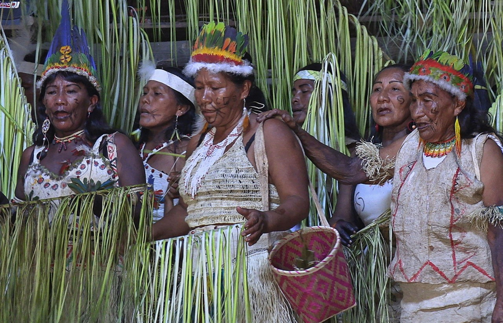

¡Colombia, sede mundial del COP06 2024!
¡Curiosidades!
Contiene una 5ª parte del agua dulce de todo el planeta, cerca de unos 7.05 millones de kilómetros cuadrados. El río Amazonas, gracias a su tremendo flujo de agua, vierte una quinta parte de aguas dulces del mundo en el Atlántico. En su punto de salida, el agua dulce del río diluye gran parte de la salinidad del océano, y alrededor de 2.5 kilómetros se puede apreciar una clara diferenciación de color.